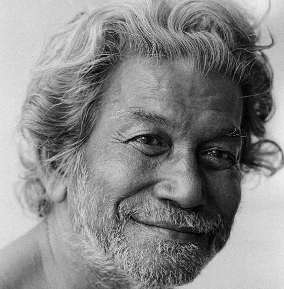

Ramkinkar Baij was one of the important early modernist artists of India. He was especially known for his large-scale sculptures, paintings, drawings and graphic works. He studied at Kala Bhavana in Santiniketan under the guidance of Nandalal Bose and later became a teacher there.
His artistic style combined Indian traditions with ideas from modern Western art. He often created works inspired by ordinary people, workers, animals and nature. He experimented with different materials and became particularly known for using cement concrete in monumental sculptures.
In 1970, the Government of India honoured him with the Padma Bhushan for his contribution to Indian art. His sculptures and paintings remain important examples of modern Indian art.